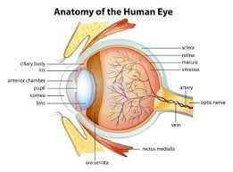
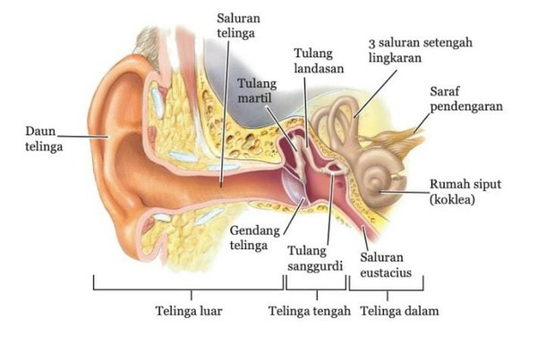
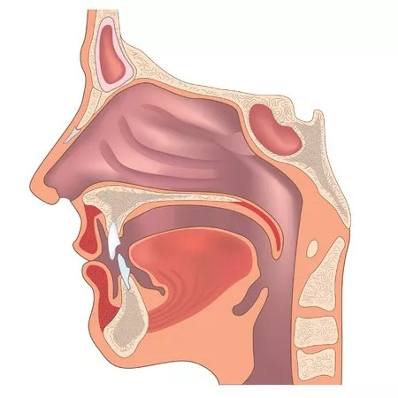
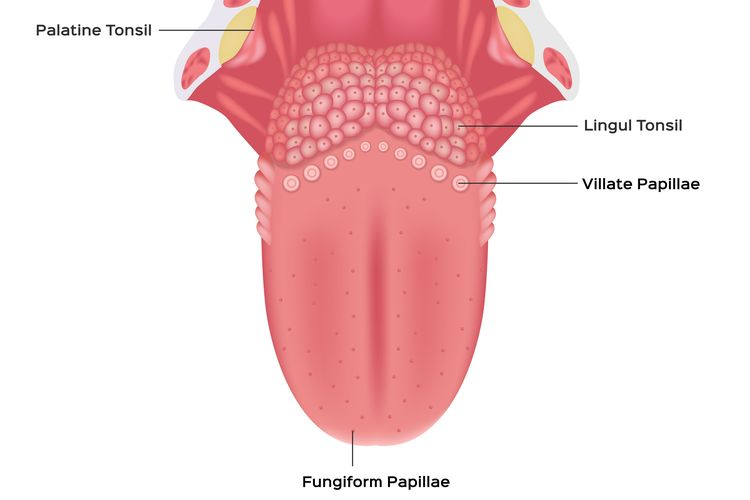
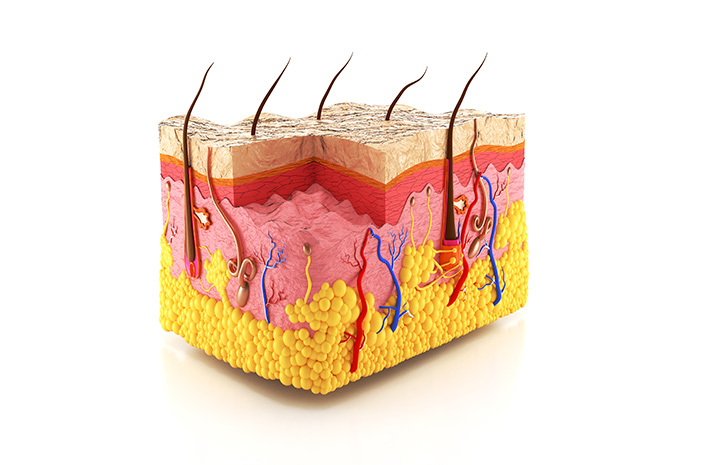

Mata

Mata adalah indera penglihatan. Mata dibentuk untuk menerima
rangsangan berkas cahaya pada retina, lalu dengan perantaraan
serabut-serabut nervus optikus mengalihkan rangsangan ini ke pusat
penglihatan pada otak untuk ditafsirkan.
Mata manusia digunakan untuk melihat dan memproses cahaya. Mata
mengandung lensa yang membantu dalam pemfokusan cahaya pada retina,
di mana sinyal-sinyal visual dikirim ke otak untuk
diinterpretasikan.
Telinga

Telinga adalah salah satu dari lima alat indera manusia yang
memiliki fungsi utama sebagai alat pendengaran. Telinga terdiri dari
tiga bagian utama, yaitu telinga luar, telinga tengah, dan telinga
dalam. Telinga luar terdiri dari daun telinga dan saluran telinga
yang berfungsi untuk mengumpulkan gelombang suara dan menangkap debu
serta hewan berukuran kecil yang masuk ke telinga. Telinga tengah
terdiri dari gendang telinga (membran timpani) dan tulang-tulang
pendengaran (maleus, martil, inkus, landasan, stapes, dan sanggurdi)
yang berfungsi untuk menangkap gelombang suara dan meneruskan
getaran ke telinga dalam. Telinga dalam terdiri dari koklea atau
rumah siput yang berfungsi untuk mendeteksi suara dan menjaga
keseimbangan tubuh.
Telinga manusia digunakan untuk mendengar suara dan merespons
gelombang suara. Telinga terdiri dari telinga luar, tengah, dan
dalam, yang bekerja bersama-sama untuk mengubah getaran suara
menjadi sinyal yang dapat diinterpretasikan oleh otak. Pembagian
telinga manusia dapat dibagi sebagai berikut:
Telinga bagian luar
Telinga luar terdiri dari daun telinga dan liang telinga sampai
membran timpani. Daun telinga terdiri dari tulang rawan elastin
dan kulit. Pada liang telinga sepertiga bagian luar adalah rangka
tulang rawan, sedangkan dua pertiga bagian dalam adalah terdiri
dari tulang. Panjasngnya kira-kira 2 ½-3 cm. Membran timpani
mengalami vibrasi dan kemudian akan diteruskan ke tulangtulang
pendengaran yaitu malleus, incus dan stapes
Telinga bagian tengah
Telinga tengah Terdiri dari membran timpani sampai tuba
eustachius, yang terdiri dari tulang-tulang pendengaran yaitu
malleus, incus dan stapes. Tulang telinga tengah saling
berhubungan satu sama lain. Prosesus malleus melekat pada membran
timpani, malleus melekat pada inkus dan inkus melekat ada stapes
dan stapes melekat pada oval window. Saluran eustachius
menghubungkan ruang telinga tengah dengan nasofaring, sehinggan
berfungsi sebagai penyeimbang tekanan udara pada kedua sisi
ruangan tersebut.
Telinga bagian dalam
Telinga dalam terdiri dari koklea (rumah siput) yang berbentuk
spiral. Ukuran panjang koklea berkisar 3 cm, dan juga terdapat
vestibular yang tediri dari 3 buah kanalis semisirkularis. Kanalis
semisirkularis saling berhubungan secara tidak lengkap dan
membentuk lingkaran yang tidak lengkap pula. Skala timpani dan
vestibula berisi perilimfa, skala media berisi endolimfa. Dasar
skala vestibuli disebut sebagai membran vestibule (Reissner's
membrane), sedangkan dasar skala adalah membrane basalis, dan pada
membrane tersebut terletak organ corti.

Hidung
Hidung manusia digunakan untuk mencium bau dan mengidentifikasi
berbagai aroma. Di dalam hidung terdapat reseptor-reseptor penciuman
yang dapat mendeteksi molekul-molekul aroma dalam udara.
Hidung adalah organ penciuman yang terletak di tengah-tengah wajah.
Hidung memiliki beberapa bagian, seperti lubang hidung, septum, bulu
hidung, rongga hidung, sinus hidung, saraf hidung, tulang rawan
hidung, dan pembuluh darah. Hidung berfungsi sebagai organ
pernapasan dan juga sebagai indera penciuman. Hidung dapat menangkap
aroma dan membersihkan udara luar yang masuk. Selain itu, hidung
juga berperan dalam sistem pertahanan tubuh dengan menyaring udara
yang masuk ke dalam tubuh dari berbagai debu, bakteri, dan kuman.
Hidung juga terhubung dengan otak melalui saraf kranial dan dapat
menimbulkan serta menciptakan ingatan terhadap penciuman sesuatu.

Lidah
Lidah manusia digunakan untuk merasakan rasa makanan dan minuman.
Lidah memiliki ribuan papila rasa yang mengandung reseptor-reseptor
yang merespons berbagai rasa seperti manis, asam, asin, pahit, dan
umami.
Lidah adalah salah satu dari lima alat indera manusia yang berfungsi
sebagai indra pengecap. Lidah memiliki beberapa bagian, seperti
papila yang merupakan kumpulan ujung-ujung saraf yang terdapat pada
bintil-bintil lidah. Papila berfungsi sebagai reseptor pada lidah
yang peka terhadap rangsangan berupa zat kimia larutan. Lidah juga
memiliki beberapa fungsi penting lainnya, seperti membantu mencerna
makanan secara kimiawi, mengatur letak makanan, membantu menelan
makanan, membantu mengisap cairan, dan membantu menyentuh. Selain
itu, lidah juga merupakan salah satu bagian tubuh yang paling peka
terhadap sentuhan.

Kulit
Kulit manusia adalah organ terbesar yang digunakan untuk merasakan
sentuhan, tekanan, suhu, dan rasa sakit. Kulit memiliki berbagai
jenis reseptor yang mendeteksi rangsangan-rangsangan ini dan
mengirimkan sinyal-sinyal ke otak.
Kulit adalah organ terluar pada tubuh manusia yang memiliki beberapa
fungsi penting. Salah satu fungsi utama kulit adalah sebagai
pelindung tubuh dari berbagai penyakit dan bahaya lingkungan. Selain
itu, kulit juga berfungsi sebagai indra peraba, yaitu alat indera
manusia yang dapat merasakan berbagai tekstur, tekanan, gerakan, dan
rasa sakit dengan kulit. Kulit juga berperan sebagai penjaga suhu
tubuh dan dapat mendukung penampilan serta meningkatkan rasa percaya
diri orang yang memilikinya. Kulit terdiri dari tiga lapisan, yaitu
kulit ari (epidermis), kulit jangat (dermis), dan jaringan kulit
bawah (hipodermis). Setiap lapisan kulit memiliki struktur dan
fungsi yang berbeda-beda.